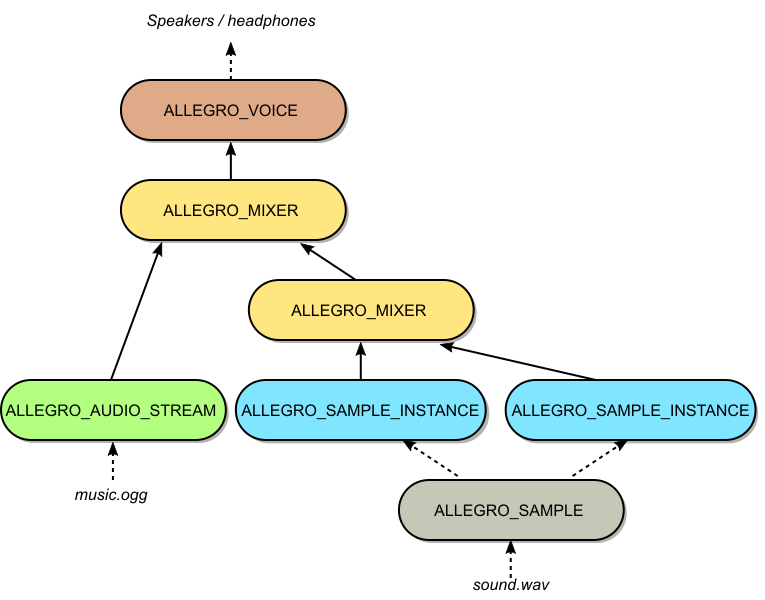

In order to just play some samples, here's how to quick start with Allegro's audio addon: Call al_reserve_samples with the number of samples you'd like to be able to play simultaneously (don't forget to call al_install_audio beforehand). If these succeed, you can now call al_play_sample, with data obtained by al_load_sample, for example (don't forget to initialize the al5acodec addon). You don't need to worry about voices, mixers or sample instances when using this approach. In order to stop samples, you can use the ALLEGRO_SAMPLE_ID that al_play_sample returns.
If you want to play large audio files (e.g. background music) without loading the whole file at once or if you want to output audio generated in real-time, you can use Allegro's audio streams. The easiest way to setup an audio stream is to attach it to the default mixer (created for you by al_reserve_samples) using al_attach_audio_stream_to_mixer on the return value of al_get_default_mixer. Allegro will feed streams created from files using al_load_audio_stream automatically. However, you can also stream audio data you generate on the fly. In this case, audio streams will emit an event when it's time to provide the next fragment (chunk) of audio data. You can control several playback parameters of audio streams (speed, gain, pan, playmode, played/paused; additionally position and loop points when streaming a file).
For more fine-grained control over audio output, here's a short description of the basic concepts:
Voices represent audio devices on the system. Basically, every audio output chain that you want to be heard needs to end up in a voice. As voices are on the hardware/driver side of things, there is only limited control over their parameters (frequency, sample format, channel configuration). The number of available voices is limited as well. Typically, you will only use one voice and attach a mixer to it. Calling al_reserve_samples will do this for you by setting up a default voice and mixer; it can also be achieved by calling al_restore_default_mixer. Although you can attach sample instances and audio streams directly to a voice without using a mixer, it is, as of now, not recommended. In contrast to mixers, you can only attach a single object to a voice anyway.
Mixers mix several sample instances and/or audio streams into a single output buffer, converting sample data with differing formats according to their output parameters (frequency, depth, channels) in the process. In order to play several samples/streams at once reliably, you will need at least one mixer. A mixer that is not (indirectly) attached to a voice will remain silent. For most use cases, one (default) mixer attached to a single voice will be sufficient. You may attach mixers to other mixers in order to create complex audio chains.
Samples (ALLEGRO_SAMPLEptr) just represent "passive" buffers for sample data in memory. In order to play a sample, a sample instance (ALLEGRO_SAMPLE_INSTANCEptr) needs to be created and attached to a mixer (or voice). Sample instances control how the underlying samples are played. Several playback parameters (position, speed, gain, pan, playmode, playing/paused) can be adjusted. Particularly, multiple instances may be created from the same sample, e.g. with different parameters.
Audio streams (see above) are similar to sample instances insofar as they respond to the same playback parameters and have to be attached to mixers or voices. A single audio stream can only be played once simultaneously.
For example, consider the following configuration of the audio system:

An example configuration of the audio system to play music and a sound.
VAR
Voice: ALLEGRO_VOICEptr;
Mixer1, Mixer2: ALLEGRO_MIXERptr;
Stream: ALLEGRO_AUDIO_STREAMptr;
Sample: ALLEGRO_SAMPLEptr;
Instance1, Instance2: ALLEGRO_SAMPLE_INSTANCEptr;
BEGIN
Voice := al_create_voice (
44100, ALLEGRO_AUDIO_DEPTH_INT16, ALLEGRO_CHANNEL_CONF_2
);
Mixer1 := al_create_mixer (
44100, ALLEGRO_AUDIO_DEPTH_FLOAT32, ALLEGRO_CHANNEL_CONF_2
);
Mixer2 := al_create_mixer (
44100, ALLEGRO_AUDIO_DEPTH_FLOAT32, ALLEGRO_CHANNEL_CONF_2
);
{ Load a stream, the stream starts in a playing state and just needs
to be attached to actually output sound. }
Stream := al_load_audio_stream ('music.ogg', 4, 2048);
{ The sample needs sample instances to output sound. }
Sample := al_load_sample ('sound.wav');
Instance1 := al_create_sample_instance (Sample);
Instance2 := al_create_sample_instance (Sample);
{ Attach everything up (as in the diagram). }
al_attach_mixer_to_voice (Mixer1, Voice);
al_attach_mixer_to_mixer (Mixer2, Mixer1);
al_attach_audio_stream_to_mixer (Stream, Mixer1);
al_attach_sample_instance_to_mixer (Instance1, Mixer2);
al_attach_sample_instance_to_mixer (Instance2, Mixer2);
{ Play two copies of the sound simultaneously. }
al_set_sample_instance_playing (Instance1, TRUE);
al_set_sample_instance_playing (Instance2, TRUE);
Since we have two mixers, with the sample instances connected to a different mixer than the audio stream, you can control the volume of all the instances independently from the music by setting the gain of the mixer / stream. Having two sample instances lets you play two copies of the sample simultaneously.
With this in mind, another look at al_reserve_samples and al_play_sample is due: What the former does internally is to create a specified number of sample instances that are "empty" at first, i.e. with no sample data set. When al_play_sample is called, it'll use one of these internal sample instances that is not currently playing to play the requested sample. All of these sample instances will be attached to the default mixer, which can be changed via al_set_default_mixer.
See Audio recording for Allegro's audio recording API, which is, as of now, still unstable and subject to change.
Creates a sample data structure from the supplied buffer. If free_buf is True then the buffer will be freed with al_free when the sample data structure is destroyed. For portability (especially Windows), the buffer should have been allocated with al_malloc. Otherwise you should free the sample data yourself.
A sample that is referred to by the samples parameter refers to a sequence channel intensities. E.g. if you're making a stereo sample with the samples set to 4, then the layout of the data in buf will be:
LRLRLRLR
Where L and R are the intensities for the left and right channels respectively. A single sample, then, refers to the LR pair in this example.
To allocate a buffer of the correct size, you can use something like this:
Sets the length of the sample instance in sample values. This can be used to play only parts of the underlying sample. Be careful not to exceed the actual length of the sample data, though.
Returns
True on success, False on failure. Will fail if the sample instance is currently playing.
Sets the pan value on a sample instance. A value of -1.0 means to play the sample only through the left speaker; +1.0 means only through the right speaker; 0.0 means the sample is centre balanced. A special value ALLEGRO_AUDIO_PAN_NONE disables panning and plays the sample at its original level. This will be louder than a pan value of 0.0.
Note
panning samples with more than two channels doesn't work yet.
Returns
True on success, False on failure. Will fail if the sample instance is attached directly to a voice.
Changes the sample data that a sample instance plays. This can be quite an involved process.
First, the sample is stopped if it is not already.
Next, if data is Nil, the sample is detached from its parent (if any).
If data is not Nil, the sample may be detached and reattached to its parent (if any). This is not necessary if the old sample data and new sample data have the same frequency, depth and channel configuration. Reattaching may not always succeed.
On success, the sample remains stopped. The playback position and loop end points are reset to their default values. The loop mode remains unchanged.
Returns
True on success, False on failure. On failure, the sample will be stopped and detached from its parent.
Returns the sample data that the sample instance plays.
Note this returns a pointer to an internal structure, not the ALLEGRO_SAMPLEptr that you may have passed to al_set_sample. However, the sample buffer of the returned ALLEGRO_SAMPLEptr will be the same as the one that was used to create the sample (passed to al_create_sample). You can use al_get_sample_data on the return value to retrieve and compare it.
Creates an ALLEGRO_AUDIO_STREAMptr. The stream will be set to play by default. It will feed audio data from a buffer, which is split into a number of fragments.
A sample that is referred to by the samples parameter refers to a sequence channel intensities. E.g. if you're making a stereo stream with the samples set to 4, then the layout of the data in the fragment will be:
LRLRLRLR
Where L and R are the intensities for the left and right channels respectively. A single sample, then, refers to the LR pair in this example.
The choice of buffer_count, samples and freq directly influences the audio delay. The delay in seconds can be expressed as:
Delay := buffer_count * samples / freq
This is only the delay due to Allegro's streaming, there may be additional delay caused by sound drivers and/or hardware.
Note
If you know the fragment size in bytes, you can get the size in samples like this:
Unlike many Allegro objects, audio streams are not implicitly destroyed when Allegro is shut down. You must destroy them manually with al_destroy_audio_stream before the audio system is shut down.
Parameters
buffer_count
How many fragments to use for the audio stream. Usually only two fragments are required - splitting the audio buffer in two halves. But it means that the only time when new data can be supplied is whenever one half has finished playing. When using many fragments, you usually will use fewer samples for one, so there always will be (small) fragments available to be filled with new data.
You should call this to finalise an audio stream that you will no longer be feeding, to wait for all pending buffers to finish playing. The stream's playing state will change to False.
When using Allegro's audio streaming, you will use this function to continuously provide new sample data to a stream.
If the stream is ready for new data, the function will return the address of an internal buffer to be filled with audio data. The length and format of the buffer are specified with al_create_audio_stream or can be queried with the various functions described here. Once the buffer is filled, you must signal this to Allegro by passing the buffer to al_set_audio_stream_fragment.
If the stream is not ready for new data, the function will return Nil.
Note
If you listen to events from the stream, an ALLEGRO_EVENT_AUDIO_STREAM_FRAGMENT event will be generated whenever a new fragment is ready. However, getting an event is not a guarantee that al_get_audio_stream_fragment will not return Nil, so you still must check for it.
This function needs to be called for every successful call of al_get_audio_stream_fragment to indicate that the buffer (pointed to by val) is filled with new data.
Sets the pan value on an audio stream. A value of -1.0 means to play the stream only through the left speaker; +1.0 means only through the right speaker; 0.0 means the sample is centre balanced. A special value ALLEGRO_AUDIO_PAN_NONE disables panning and plays the stream at its original level. This will be louder than a pan value of 0.0.
Returns
True on success, False on failure. Will fail if the audio stream is attached directly to a voice.
This function needs to be called for every successful call of al_get_audio_stream_fragment to indicate that the buffer (pointed to by val) is filled with new data.
Sets the streaming file playing position to the beginning. Currently this can only be called on streams created with al_load_audio_stream, al_load_audio_stream_f and the format-specific functions underlying those functions.
Sets the streaming file playing position to time. Currently this can only be called on streams created with al_load_audio_stream, al_load_audio_stream_f and the format-specific functions underlying those functions.
Sets the loop points for the stream in seconds. Currently this can only be called on streams created with al_load_audio_stream, al_load_audio_stream_f and the format-specific functions underlying those functions.
Creates a mixer to attach sample instances, audio streams, or other mixers to. It will mix into a buffer at the requested frequency (in Hz) and channel count.
The only supported audio depths are ALLEGRO_AUDIO_DEPTH_FLOAT32 and ALLEGRO_AUDIO_DEPTH_INT16 (not yet complete).
To actually produce any output, the mixer will have to be attached to a voice.
Detaches the stream from whatever it's attached to, if anything.
FUNCTION al_attach_mixer_to_mixer (mixerA, mixerB: ALLEGRO_MIXERptr): AL_BOOL; CDECL; EXTERNAL ALLEGRO_AUDIO_LIB_NAME;
Attaches the mixer passed as the first argument onto the mixer passed as the second argument. The first mixer (that is going to be attached) must not already be attached to anything. Both mixers must use the same frequency, audio depth and channel configuration.
Sets a post-processing filter function that's called after the attached streams have been mixed. The buffer's format will be whatever the mixer was created with. The sample count and user-data pointer is also passed.
Note
The callback is called from a dedicated audio thread.
FUNCTION al_get_mixer_frequency (CONST mixer: ALLEGRO_MIXERptr): AL_UINT; CDECL; EXTERNAL ALLEGRO_AUDIO_LIB_NAME;
Creates a voice structure and allocates a voice from the digital sound driver. The passed frequency (in HZ), sample format and channel configuration are used as a hint to what kind of data will be sent to the voice. However, the underlying sound driver is free to use non-matching values. For example, it may be the native format of the sound hardware.
If a mixer is attached to the voice, the mixer will handle the conversion of all its input streams to the voice format and care does not have to be taken for this. However if you access the voice directly, make sure to not rely on the parameters passed to this function, but instead query the returned voice for the actual settings.
Attaches a sample instance to a voice, and allows it to play. The instance's gain and loop mode will be ignored, and it must have the same frequency, channel configuration and depth (including signed-ness) as the voice. This function may fail if the selected driver doesn't support preloading sample data.
At this time, we don't recommend attaching sample instances directly to voices. Use a mixer inbetween. seealso(al_detach_voice)
Attaches an audio stream to a voice. The same rules as al_attach_sample_instance_to_voice apply. This may fail if the driver can't create a voice with the buffer count and buffer size the stream uses.
An audio stream attached directly to a voice has a number of limitations: The audio stream plays immediately and cannot be stopped. The stream position, speed, gain and panning cannot be changed. At this time, we don't recommend attaching audio streams directly to voices. Use a mixer inbetween.
Changes whether a voice is playing or not. This can only work if the voice has a non-streaming object attached to it, e.g. a sample instance. On success the voice's current sample position is reset.
Fills a buffer with silence, for the given format and channel configuration. The buffer must have enough space for the given number of samples, and be properly aligned.
FUNCTION al_reserve_samples (reserve_samples: AL_INT): AL_BOOL; CDECL; EXTERNAL ALLEGRO_AUDIO_LIB_NAME;
Reserves a number of sample instances, attaching them to the default mixer. If no default mixer is set when this function is called, then it will create one and attach it to the default voice. If no default voice has been set, it, too, will be created.
This diagram illustrates the structures that are set up:
Plays a sample on one of the sample instances created by al_reserve_samples.
FUNCTION al_get_default_mixer: ALLEGRO_MIXERptr; CDECL; EXTERNAL ALLEGRO_AUDIO_LIB_NAME;
Returns the default mixer, or Nil if one has not been set. Although different configurations of mixers and voices can be used, in most cases a single mixer attached to a voice is what you want. The default mixer is used by al_play_sample.
Restores Allegro's default mixer and attaches it to the default voice.
FUNCTION al_set_default_mixer (mixer: ALLEGRO_MIXERptr): AL_BOOL; CDECL; EXTERNAL ALLEGRO_AUDIO_LIB_NAME;
Sets the default mixer. All samples started with al_play_sample will be stopped and all sample instances returned by al_lock_sample_id will be invalidated. If you are using your own mixer, this should be called before al_reserve_samples.
Restores Allegro's default mixer and attaches it to the default voice.
FUNCTION al_restore_default_mixer: AL_BOOL; CDECL; EXTERNAL ALLEGRO_AUDIO_LIB_NAME;
Restores Allegro's default mixer and attaches it to the default voice. If the default mixer hasn't been created before, it will be created. If the default voice hasn't been set via al_set_default_voice or created before, it will also be created. All samples started with al_play_sample will be stopped and all sample instances returned by al_lock_sample_id will be invalidated.
You can call this before calling al_restore_default_mixer to provide the voice which should be used. Any previous voice will be destroyed. You can also pass Nil to destroy the current default voice.
Locks a ALLEGRO_SAMPLE_ID, returning the underlying ALLEGRO_SAMPLE_INSTANCEptr. This allows you to adjust the various properties of the instance (such as volume, pan, etc) while the sound is playing.
This function will return Nil if the sound corresponding to the id is no longer playing.
While locked, ALLEGRO_SAMPLE_ID will be unavailable to additional calls to al_play_sample, even if the sound stops while locked. To put the ALLEGRO_SAMPLE_ID back into the pool for reuse, make sure to call al_unlock_sample_id when you're done with the instance.
Unlocks a ALLEGRO_SAMPLE_ID, allowing future calls to al_play_sample to reuse it if possible. Note that after the id is unlocked, the ALLEGRO_SAMPLE_INSTANCEptr that was previously returned by al_lock_sample_id will possibly be playing a different sound, so you should only use it after locking the id again.
Unlike regular streams, the one returned by this function need not be fed by the user; the library will automatically read more of the file as it is needed. The stream will contain buffer_count buffers with samples samples.
The audio stream will start in the playing state. It should be attached to a voice or mixer to generate any output. See ALLEGRO_AUDIO_STREAMptr for more details.
Note
the al5audio library does not support any audio file formats by default. You must use the al5acodec addon, or register your own format handler.
Loads an audio file from an ALLEGRO_FILEptr tream into an ALLEGRO_SAMPLEptr. The file type is determined by the passed ident parameter, which is a file name extension including the leading dot.
Note that this stores the entire file in memory at once, which may be time consuming. To read the file as it is needed, use al_load_audio_stream_f.
Note
the al5audio add-on does not support any audio file formats by default. You must use the al5acodec addon, or register your own format handler.
Returns
the sample on success, Nil on failure. The file remains open afterwards.
Loads an audio file from ALLEGRO_FILEptr stream as it is needed.
Unlike regular streams, the one returned by this function need not be fed by the user; the library will automatically read more of the file as it is needed. The stream will contain buffer_count buffers with samples samples.
The file type is determined by the passed ident parameter, which is a file name extension including the leading dot.
The audio stream will start in the playing state. It should be attached to a voice or mixer to generate any output. See ALLEGRO_AUDIO_STREAMptr for more details.
Note
the al5audio library does not support any audio file formats by default. You must use the al5acodec addon, or register your own format handler.
Returns
the stream on success, Nil on failure. On success the file should be considered owned by the audio stream, and will be closed when the audio stream is destroyed. On failure the file will be closed.
Creates an audio recorder using the system's default recording device. (So if the returned device does not work, try updating the system's default recording device.)
Allegro will internally buffer several seconds of captured audio with minimal latency. (XXX: These settings need to be exposed via config or API calls.) Audio will be copied out of that private buffer into a fragment buffer of the size specified by the samples parameter. Whenever a new fragment is ready an event will be generated.
The total size of the fragment buffer is fragment_count * samples * bytes_per_sample. It is treated as a circular, never ending buffer. If you do not process the information fast enough, it will be overrun. Because of that, even if you only ever need to process one small fragment at a time, you should still use a large enough value for fragment_count to hold a few seconds of audio.
frequency is the number of samples per second to record. Common values are:
8000 - telephone quality speech
11025
22050
44100 - CD quality music (if 16-bit, stereo)
For maximum compatibility, use a depth of ALLEGRO_AUDIO_DEPTH_UINT8 or ALLEGRO_AUDIO_DEPTH_INT16, and a single (mono) channel.
Stop capturing audio data. Note that the audio recorder is still active and consuming resources, so if you are finished recording you should destroy it with al_destroy_audio_recorder.
You may still receive a few events after you call this function as the device flushes the buffer.
If you restart the recorder, it will begin recording at the beginning of the next fragment buffer.
An opaque datatype that represents a recording device.
Unstable API: The API may need a slight redesign.
ALLEGRO_AUDIO_DEPTH = (...);
Sample depth and type as well as signedness. Mixers only use 32-bit signed float (-1..+1), or 16-bit signed integers. Signedness is determined by an "unsigned" bit-flag applied to the depth value.
An Allegro sample object stores the data necessary for playing pre-defined digital audio. It holds a user-specified PCM data buffer and information about its format (data length, depth, frequency, channel configuration). You can have the same ALLEGRO_SAMPLE playing multiple times simultaneously.
An Allegro sample instance represents a playable instance of a predefined sound effect. It holds information about how the effect should be played: These playback parameters consist of the looping mode, loop start/end points, playing position, speed, gain, pan and the playmode. Whether a sample instance is currently playing or paused is also one of its properties.
An instance uses the data from an Allegro sample object. Multiple instances may be created from the same ALLEGRO_SAMPLE. An ALLEGRO_SAMPLE must not be destroyed while there are instances which reference it.
To actually produce audio output, an ALLEGRO_SAMPLE_INSTANCEptr must be attached to an ALLEGRO_MIXERptr which eventually reaches an ALLEGRO_VOICEptr object.
Pointer to an ALLEGRO_AUDIO_STREAM object that is used to stream generated audio to the sound device, in real-time. This is done by reading from a buffer, which is split into a number of fragments. Whenever a fragment has finished playing, the user can refill it with new data.
As with ALLEGRO_SAMPLE_INSTANCEptr objects, streams store information necessary for playback, so you may not play the same stream multiple times simultaneously. Streams also need to be attached to an ALLEGRO_MIXERptr, which, eventually, reaches an ALLEGRO_VOICEptr object.
While playing, you must periodically fill fragments with new audio data. To know when a new fragment is ready to be filled, you can either directly check with al_get_available_audio_stream_fragments, or listen to events from the stream.
You can register an audio stream event source to an event queue; see al_get_audio_stream_event_source. An ALLEGRO_EVENT_AUDIO_STREAM_FRAGMENT event is generated whenever a new fragment is ready. When you receive an event, use al_get_audio_stream_fragment to obtain a pointer to the fragment to be filled. The size and format are determined by the parameters passed to al_create_audio_stream.
If you're late with supplying new data, the stream will be silent until new data is provided. You must call al_drain_audio_stream when you're finished with supplying data to the stream.
A mixer mixes together attached streams into a single buffer. In the process, it converts channel configurations, sample frequencies and audio depths of the attached sample instances and audio streams accordingly. You can control the quality of this conversion using ALLEGRO_MIXER_QUALITY.
When going from mono to stereo (and above), the mixer reduces the volume of both channels by sqrt(2). When going from stereo (and above) to mono, the mixer reduces the volume of the left and right channels by sqrt(2) before adding them to the center channel (if present).
A voice represents an audio device on the system, which may be a real device, or an abstract device provided by the operating system. To play back audio, you would attach a mixer, sample instance or audio stream to a voice.
A special value for the pan property of sample instances and audio streams. Use this value to disable panning on sample instances and audio streams, and play them without attentuation implied by panning support.
ALLEGRO_AUDIO_PAN_NONE is different from a pan value of 0.0 (centered) because, when panning is enabled, we try to maintain a constant sound power level as a sample is panned from left to right. A sound coming out of one speaker should sound as loud as it does when split over two speakers. As a consequence, a sample with pan value 0.0 will be 3 dB softer than the original level.
(Please correct us if this is wrong.)
Generated by PasDoc 0.15.0. Generated on 2020-04-16 11:56:29.